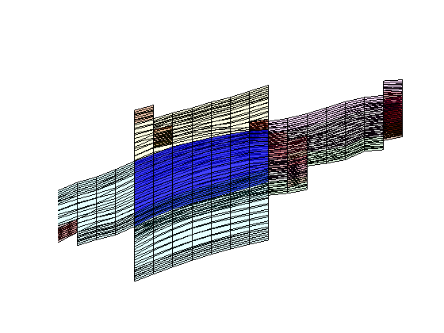

Contents
Corner-Point Grids: Example of a realistic Field Model
In this example, we will examine a model from the project Sensitivity Analysis of the Impact of Geological Uncertainties on Production forecasting in clastic hydrocarbon reservoirs (SAIGUP). The model has faults, inactive cells, and disconnected components, but no pinch-out. For a tutorial including pinched cells see the MRST webpages. We will show how to read, process, and visualize the model. Then we demonstrate how one can form an overlying coarse grid by partitioning the fine-grid uniformly in logical Cartesian space. We end by visualizing some of the coarse blocks and how they are connected with their neighbors.
require coarsegrid
Check for existence of input model data
The model can be downloaded from the the MRST page
http://www.sintef.no/Projectweb/MRST/
grdecl = fullfile(ROOTDIR, 'examples', 'data', 'SAIGUP', 'SAIGUP.GRDECL'); if ~exist(grdecl, 'file'), error('SAIGUP model data is not available.') end
Read and process the model
We start by reading the model from a file in the Eclipse format (GRDECL)
grdecl = readGRDECL(grdecl) %#ok (intentional display)
grdecl =
cartDims: [40 120 20]
COORD: [29766x1 double]
ZCORN: [768000x1 double]
ACTNUM: [96000x1 int32]
PERMX: [96000x1 double]
PERMY: [96000x1 double]
PERMZ: [96000x1 double]
MULTX: [96000x1 double]
MULTY: [96000x1 double]
MULTZ: [96000x1 double]
PORO: [96000x1 double]
NTG: [96000x1 double]
SATNUM: [96000x1 double]
From the output of readGRDECL, we see that the file contains four fields:
- The dimension of the underlying logical Cartesian grid (keyword SPECGRID, equal 40x120x20)
- The coordinates of the pillars (keyword COORD, 6x41x121 values)
- The coordinates along the pillars (keyword ZCORN, 8x40x120x20 values)
- The flag for active/inactive cells (keyword ACTNUM, 40x120x20 values)
Since the keyword ACTNUM is present, the model is likely to contain both active and inactive cells. To be able to plot both the active and the inactive cells, we need to override the ACTNUM field when processing the input, because if not, the inactive cells will be ignored when the unstructured grid is built.
WARNING: inactive cells often contain garbage data and should generally not be inspected in this manner. Here, most inactive cells are defined in a reasonable way. By not performing basic sanity checks on the resulting grid (option 'checkgrid'=false), we manage to process the grid and produce reasonable graphical output. In general, however, we strongly advice that 'checkgrid' remain set in its default state of true.
To simplify the processing, a single layer of artificial cells is added above the top and below the bottom of the model, but not touching the model. (See the tutorial "Read, Display, and Manipulate" for more details). In the following, we therefore work with a 40x120x22 model.
actnum = grdecl.ACTNUM; grdecl.ACTNUM = ones(prod(grdecl.cartDims),1); G = processGRDECL(grdecl, 'Verbose', true, 'checkgrid', false);
Adding 9600 artifical cells at top/bottom Processing regular i-faces Found 96778 new regular faces Elapsed time is 0.037365 seconds. Processing i-faces on faults Found 521 faulted stacks Found 27752 new faces Elapsed time is 1.318806 seconds. Processing regular j-faces Found 101508 new regular faces Elapsed time is 0.040340 seconds. Processing j-faces on faults Found 226 faulted stacks Found 12711 new faces Elapsed time is 0.473271 seconds. Processing regular k-faces Found 120000 new regular faces Elapsed time is 0.043839 seconds. Building grid structure removing 9600 artifical cells at top/bottom removing 0 inactive and pinched cells Grid has 2 disconnected components
In the first phase, we process all faces with normals in the logical i-direction. There should be 40x120x22=105600, out of which 96778 are not degenerate or at a fault. In the next phase, we process the faults and split faces to obtain a matching grid. Here there are faults at 521 pairs of pillars and the splitting of these results in 27752 new faces. If each face were split in two, we would have obtained 521x(20x2+2)=21882, which means that some of the faces have been split into at least three subfaces. The process is then repeated in the logical j-direction.
The processing assumes that there are no faults in the logical k-direction and therefore processes only regular connections. In absence of inactive or pinched cells, there should be (20+1+4)x120x40=120000 faces (where +4 is due to the artificial cells) in the k-direction. The result of the grid processing is a new structure G, outlined below
G %#ok (intentional display)
G =
1x2 struct array with fields:
nodes
faces
cells
cartDims
type
griddim
Inspect the whole model
Having obtained the grid in the correct unstructured format, we first plot the outline of the whole model and highlight all faults. This model consist of two separated grids so that numel(G)=2
newplot; subplot('position',[0.025 0.025 0.95 0.95]); for i=1:numel(G) plotGrid(G(i),'FaceColor','none','EdgeColor',[0.65 0.65 0.65], ... 'EdgeAlpha',0.2); plotFaces(G(i),find(G(i).faces.tag>0),'FaceColor','red','EdgeAlpha',0.1); end axis off; axis auto; view(-10,40); zoom(1.0);
Then we distinguish the active and inactive cells using the 'FaceColor' property set to 'none' for the inactive cells and to 'y' for the active cells. We notice that that only G(1) has active cells, this is indicated with the warning.
cla; for i=1:numel(G) hi = plotGrid(G(i),find(~actnum(G(i).cells.indexMap)), ... 'FaceColor','none','EdgeColor',[0.65 0.65 0.65],'EdgeAlpha',0.2); ha = plotGrid(G(i),find( actnum(G(i).cells.indexMap)), ... 'FaceColor','y','EdgeAlpha',0.1); axis auto off; view(-10,40); zoom(1.0); end
Warning: Empty cell selection in 'plotGrid'. No graphics for you. Warning: Empty cell selection in 'plotGrid'. No graphics for you.
Inspect the active model
To inspect only the active model, we reset the ACTNUM field to its original values and recreate the grid. Now, inactive cells will be ignored and we therefore get a different unstructured grid. If we include the actnum, G from proccessGRDECL has only one component.
grdecl.ACTNUM = actnum; clear actnum;
G = processGRDECL(grdecl);
Partition the grid in logical space
We construct a coarse grid by partitioning the grid uniformly as 6x12x3 coarse blocks in index space. This process partitions all cells in the logical 40x120x20 grid, including cells that are inactive. The number of active cells within each coarse block is shown in the bar plot below.
As we can see from the bar plot, there are several coarse block that contain no active cells. We therefore postprocess the partitioning to remove blocks that contain no active cells, and then renumber the overall partitioning, giving a new total of 201 blocks. The number of blocks is found by m=max(blockIx).
Because the partitioning has been performed in logical index space, we have so far disregarded the fact the some of the blocks may contain disconnected cells because of erosion, faults, etc. We therefore postprocess the grid in physical space and split disconnected blocks.
% Partition in index space blockIx = partitionUI(G,[6 12 3]); m=max(blockIx); newplot, subplot(3,1,1) bar(accumarray(blockIx,1)); set(gca,'XLim',[0 m]); title('Unprocessed'); % Remove blocks containing no active cells blockIx = compressPartition(blockIx); subplot(3,1,2) bar(accumarray(blockIx,1)); set(gca,'XLim',[0 m]); title('Compressed'); % Split disconnected blocks blockIx = processPartition(G,blockIx); subplot(3,1,3) bar(accumarray(blockIx,1)); set(gca,'XLim',[0 m]); title('Processed'); assert (all(accumarray(blockIx, 1) > 0))
We have now obtained a partitioning consisting of 243 blocks, in which each coarse block consists of a set of connected cells in the fine grid. To show the partitioning, we plot the coarse blocks using a random and cyclic color scheme for the blocks.
newplot subplot('position',[0.025 0.025 0.95 0.95]) blockCol = rand(max(blockIx),1)*33; plotCellData(G,mod(blockCol(blockIx),11),'EdgeAlpha',0.1); axis tight off; view(-60,40);zoom(1.0); shading faceted
From the plot above, it is not easy to see the shape of the individual coarse blocks. In the next section, we will therefore show some examples of how individual blocks can be visualized.
Build the coarse-grid
Having obtained a partition we are satisfied with, we build the coarse-grid structure. This structure consists of three parts:
- the cell structure giving the number of blocks and the indices of the cells contained in each block
- the face structure giving the number of coarse faces and the indices of the neighbouring blocks
- a cellFaces array as in the fine-grid structure
CG = generateCoarseGrid(G, blockIx); CG %#ok (intentional display) CG.cells %#ok (intentional display) CG.faces %#ok (intentional display)
CG =
cells: [1x1 struct]
faces: [1x1 struct]
partition: [78720x1 double]
parent: [1x1 struct]
griddim: 3
ans =
num: 243
facePos: [244x1 double]
faces: [2184x2 double]
ans =
num: 1474
neighbors: [1474x2 double]
connPos: [1475x1 double]
fconn: [60970x1 double]
Let us now use CG to inspect some of the blocks in the coarse grid. To this end, we arbitrarily pick a few blocks and inspect these block and their neighbours. For the first block, we plot the cells and the faces that have been marked as lying on a fault
clf; plotBlockAndNeighbors(G,CG,48); view(-90,70);
For the second block, we only plot the cells and not the faulted faces
clf; plotBlockAndNeighbors(G,CG,15,'PlotFaults',false); view(90,70);
The third set of neighboring blocks contains more faults
clf; plotBlockAndNeighbors(G,CG,21); view(0,40);
We end the example by highlighting six representative blocks, including the three blocks we inspected above. Notice that this way of visualization only uses the fine grid and the partition vector, and thus does not require that the coarse-grid structure has been built.
clf blocks = [4, 16,33, 36, 52]; col = ['b','g','r','c','m','y']; axes('position',[0.01 0.25 0.99 0.75]); plotGrid(G,'EdgeColor',[0.75 0.75 0.75],'FaceColor','w','EdgeAlpha',0.1); outlineCoarseGrid(G,blockIx, 'FaceColor', 'none', ... 'LineWidth', 2,'EdgeAlpha',0.1); for i=1:numel(blocks), plotGrid(G,find(blockIx==blocks(i)),'FaceColor',col(i)); end axis tight off; view(10,90); % Plot the chosen 6 coarse blocks for i=1:numel(blocks); axes('position',[(i-1)/5 0.02 1/6 0.25]); plotGrid(G,find(blockIx==blocks(i)),'FaceColor',col(i),'EdgeAlpha',0.4); axis tight off, view(0,75), zoom(1.2) end